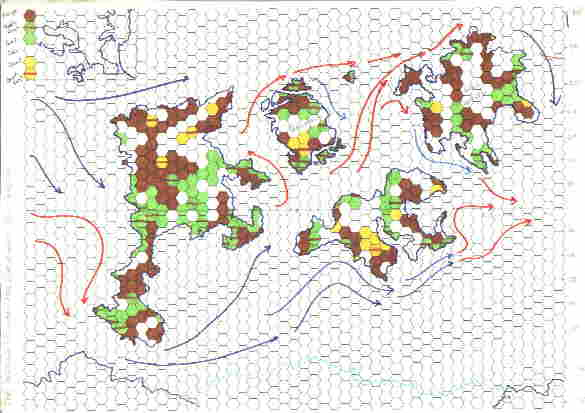
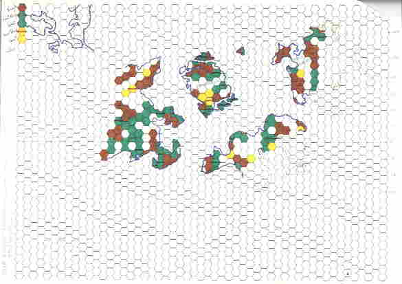

Geography
The maps below are 800km per hex at the equator, and show Europe for scale in the top left. The map extends to 70N and 70S. Brown is rough, green is forest, yellow is desert. Ocean currents and the southern continent and attached ice shelf are shown (the northern ocean has no ice-cap, just seasonal ice). The continent just above the centre is Homefall, the centre of the campaign (and the main landing site). The next continent to the north-east is High Haveen, which has some habitations almost as old.
The players had a part of the map
Developing a character
Stats are 3D6 variables (but 2 may be chosen to be 10+2d4 or 11-2d4) Roll up/down at top/bottom of the range. Stats are Str,Dex,Con;Size, Build, Cha;Wis, Wpr, Int; Psi, Sanc, Atm. Women have -5 each Size and Build, +3 each Con, Cha. With no priest system, Sanctity and Atman were meaningless. There was a psi system, but it has been lost.
Hit points = Str+(Siz+Bui)/2, if con > 12, add points about 12, if below 9, take points below.
Effective strength for combat is increased by the factor from the table below, and the effective dexterity is reduced by the same amount.
| Siz+Bui | Mod | Siz+Bui | Mod | Siz+Bui | Mod |
|---|---|---|---|---|---|
| -12 to -7 | -5 | 16 to 21 | 0 | 41 to 50 | +5 |
| -6 to -1 | -4 | 22 to 25 | +1 | 51 to 60 | +6 |
| 0 to 4 | -3 | 26 to 29 | +2 | 61 to 70 | +7 |
| 5 to 9 | -2 | 30 to 33 | +3 | 71 to 80 | +8 |
| 10 to 15 | -1 | 34 to 40 | +4 | 81 to 100 | +9 |
Handedness — D12 for right hand, D6 for left; higher score is dominant. Subtract difference from the off-hand's agility (modified dex) and half that from its strength in combat.
Magic system
See .DSYS for the outline. The main differences here were to have magic types and sub types, so you could specialise even further, at the cost of having the closely related spells just at par, rather than at bonus or penalty. The types were
Enchanter = Dictor (word based and command magic), Quaesitor (detection) =
Willpower
Warlock = Praetor Naturae (nature magic), Sorcerer (body magic), Surgior
(healing magic) = Con
Witch = Aerior, Aquior, Gaeaior, Pyrior = Cha
Wizard = Pyrior, Luminor = Str.
Note that Surgiors or Warlocks replaced clerics in this iteration.
I did have an algorithm for the fatigue table I used — minus at Level L after casting N spells is (L^(N/2L) - 1) until linear, with an extra INT-12 free spells. Spells could be pushed — the excess doubled — at a cost of 4 extra spells.
Saves against magic were based on a function of level (basic Magic Resistance Level being about 2 + level/2, some variation by character class), plus bonuses for wearing unenchanted armour (+4 for normal sized chain, +6 for normal size plate), an extra +4 for not having magic talent, plus any specific enchantment bonuses. Roll adjusted MRL or below to save. A creature needing a +N weapon to hit could be hit by a character with (MRL-7)/3.
Saves by dodging or against poisons were rolled against Dex of Con.
Combat System
Attack factor = Fighter level + 1/2 (Dex-10) - enc penalty
Defense factor = (Fighter level/2) + 1/2 (Dex-10) - enc penalty
D20 + Attack - Defense of 10 or better is a hit.
Weapons are given damages against 5 armour types — None, Leather, Chain, Plate and Special, to which half of the effective modified Str is added (add 1/4 offhand Str to main hand Str for two-handed use), plus a D6. Strengths above maximum are capped, and below minimum are adjusted to double the shortfall. Encumbrance base is 2 for leather, 4 for chain, 6 for plate, scaled up for large size+build, down for higher Str.
Examples
Greatsword 5/6/3/0/-3 Parry -12 Speed 6 min 20 (expects 2-handed use)
Battleaxe 1/-2/-6/-8/-14 Parry -3 Speed 3 min 14
Dagger 0/0/-4/-8/-12 Parry +6 speed 1 max 11
Parrying exchanges the next blow for a type of defense. In this case, the attacker adds his weapon's parry value to his attack factor and subtracts the defender's weapon parry value (shields have a zero parry value). Initiative is D20+speed (low is good).
Marksmanship is Level+dex-10, with a penalty of half the base enc for the armour type per arm for wearing armour on the arms (e.g. 1 plate arm = enc 3; one leather arm = enc 1, together enc 4), and there is a base defense factor modified by the range
Examples
Longbow 12/10/6/2/-3 damage -1/20m base defense 8 + 1 per 10 meters of
range Str 15/Dex 12, 1 shot per round
Light crossbow 13/11/6/3/-2 -1/5m 0+1/8 Str 6 (14 to manually cock), 3 rounds
per shot.
Encounters
Although I took over part of the New Earth game setting, I discarded not only the standard cleric, I also jettisoned the standard non-humans (well they weren't part of the manifest for the campaign). While the first strand of the campaign took up the Oktvabrina storyline, a separate thread investigated where strange weapons were arriving, and found evidence of offworld tampering (which then led to a world-hopping cmapaign, via world-gates, seeking to close off this route of invasion). Two types of off-worlder were encountered — Kintor, small and vulpine, and Hrulgani, large and ursine. They take roughly the elf and dwarf niches of traditional FRP, but only very roughly — spellcaster or high-finesse warrior as opposed to the unsubtle bruiser. They are drawn from the background of my SF writing, though none of those are spell-casters. The how-to-roll-up for these (and the Ayassa, who became a player character option at one of the stops along the way), are lost. I do remember that Hrulgani had low WIS (perhaps 2D8).
Kintor standard battle suit — Armour type Special, 20 point zap every round, 10 shots of 40 point. Absorbs 25 points of energy per round, flies at 30". The traded version had values Plate/5/10*20/15/24". Both gave night vision.
Hrugani standard kit was Armour type Leather absorbing 10 extra points, or 25 points of energy every round. Ground infantry used a great axe, while the aerial troops used a rifle (stats as crossbow with +10 damage, firing every round).
| Str 7/5 | Size 0 | Wis 12 | Atm 17 | 16 hp |
| Con 19 | Bld 7 | Wpr 13 | Psi 9 | +11+level |
| Dex 13/13 | Cha 13 | Int 18 | Snc 9 | MRL = 9 |
| Alternate: Enchanter | Wpr 17 | Con 18 | 15hp, +11 |
| Str 13/12 | Size 4 | Wis 12 | Atm 18 | 24 hp |
| Con 18 | Bld 6 | Wpr 14 | Psi 10 | A=11 D=7 Mark=12 |
| Dex 14/16 | Cha 14 | Int 17 | Snc 9 | MRL = 9 |
| Str 20/27 (34 2-handed) | Size 49 | Wis 10 | Atm 15 | 58 hp |
| Con 15 | Bld 20 | Wpr 12 | Psi 10 | A=10 D=6 Mark=13 |
| Dex 15/13 | Cha 11 | Int 12 | Snc 9 | MRL = 11 |
Hrulgan Axeman — as flier, with damage 24/21/17/14/9, parry = A+4, speed -1
| Str 22/30 (38 2-handed) | Size 53 | Wis 11 | Atm 16 | 73 hp |
| Con 18 | Bld 20 | Wpr 14 | Psi 10 | A=15 D=9 Mark=20 |
| Dex 18/16 | Cha 14 | Int 14 | Snc 9 | MRL = 13 |
Dramatis Personae
I even still have the character sheets from the Homefall campaign, and its subsequent evolution into plane-spanning. I shan't post their details (stats, possessions, weapons and such) here, but if any of the players read this page and want the details, I can send them. The roster was
Played by Martyn Wheeler
Patti (F7, human) with the gross magic longbow, Alin Karadh “the Mad Axe Murderer” (F10, human), who was the wielder of Glass, the gate-closing axe (much like Changeling from CJ Cherryh's Gate of Ivrel), Chenin (F9/MU8, human) with a longbow and staff of power, and a black cat familiar. I remember her for the heartfelt cry of “they die” when after many arrows, she brought down one of the first encountered Kintor in their flying suits. And for Martyn's cry of “raise the cat first” when both were crisped by a fireball (and she had less than twice the number of hit-points it had).
Played by Pete Windsor
Enthom (MU7) and his boring nondescript bodyguard Bryan Non-entity (F11). Bryan later went on to pick up the artifact sword Sundancer, and from then on has had the role of Sundancer's Feet. Thean (Priest3/Psi3)
Played by Pete Hutchison
Toyah (Th2/F4, Ayassa, deceased), Tom (F4, human)
Played by Rob Corlett
Erlan (F6, deceased), Charlemagne (MU5/Psi3), Golana (MU7/F1/Th1)
Played by Sue Lambiris
Hiratia (F11/MU7) She picked up Moonsinger, Sundancer's complement. Letillian (F6/MU6/Th2, Kintor), Elissa (MU9)
Played by Tim Durdin
Angie (MU7/F6), Korrek (F5)
Played by Will Gulland
Haram (MU5/F2), Shara (F6)
Played by MGA1 (a Mike Abbott, IIRC)
Marta (MU3, human)
Played by Neil Taylor
Harold (MU7/F4, human) with his black cat; Taras (MU7/F3)
Played by Karen
Umar (Mu5/F3, human) who gained a white Pern dragon in her travels, Jenny (F2/M5/Th2/Psi6)
I'm sure Martin Bonner played in this campaign — ISTR a Hrulgani fighter, their low WIS appealing to his style of play (called Jack?), but can't find any character sheets.
They may not have been very high level (the fighters with artefact weapons being the only ones into double figures, and that only after having evened out the experience scales so the fighter level breaks were always easier than MU ones), but they were quite tough enough. The reason for stopping the campaign was the usual that it was getting too powerful, and the systems were starting to give under the strain. The free multi-classing was achieved by putting xp into the class pot for which it was earned (using a weapon gave fighter xp, being sneaky, thief xp, and so on). Thean, the Grey priest, joined from a world along the way where such folk did magic, but in a very free-form fashion.
Karen ran a separate, higher level, party that took up the battle vs Oktvabrina theme — Tenar (F10/Mu9/Psi4 — was a druid imported from Martyn Wheeler's game, where hse had picked up both the high-power non-sword weapons — a spear +3 and a scythe +5/prot+5 — given out for lack of takers, with an owl familiar and pet bear), Allecto (MU11, another import, with a familiar owl, and a pet sabretooth), Ben (F9/Mu4/psi5, hawk familiar), Alyx(F9/Th7), Tarlannon (Mu8), Petra (Mu9/F8 — who would have been a druid had I been running such, with a pseudo-dragon familiar and a sabretooth pet), Jasper (F9/Th2).
Major Weapons
Glass — the Gateclosing Great axe — speed and parry as battleaxe, size and damage as pole-axe. +4 flaming (+5 vs regenerating, +6 vs cold/inflammable, +7 vs undead) weapon of sharpness. Int 16 Ego 18. Closes (or re-opens) gates at the cost of ma magic item; may cast light at will (cold blue light, the colour of its flames). See invisible, detect evil, infravision, heal once per day, prot +2, -1 hp/die, reduced aging rate. Disintegrate once/day, understand languages. Darkness 3/day. Prismatic spray 1/day.
Moonsinger — The female sword — size, speed, parry as shortsword, damage as bastasrd sword in 2 hands. +6 defender of cold, +9 vs fire creatures. Int 16/Ego 18. 6m radius sonic attack d6/rd when wielded in moonlight, glows in freezing temperatures. See invisible, detect gems, evil. Heal 1/day. Immunity to cold, Prot +2 Dark 3/day, coldbeam (8+d4)d6 daily, wall of cold 2/day, cloak of cold 2/day. The wielder will become female if she isn't already.
Sundancer — The male sword, +6 (+7, +8, +9) flaming defender, in sunlight acts as a dancing sword, glows as gem of brightness at will, and has contiual light effect. May ignite at will. See invisible, detect metal, evil. Heal 1/day Immunity to fire, Prot +2 Light 3/day, firebeam (8+d4)d6 daily, wall of fire 2/day, cloak of fire 2/day. The wielder will become male if he isn't already.
Material Copyright © 2001–2003 Steve Gilham